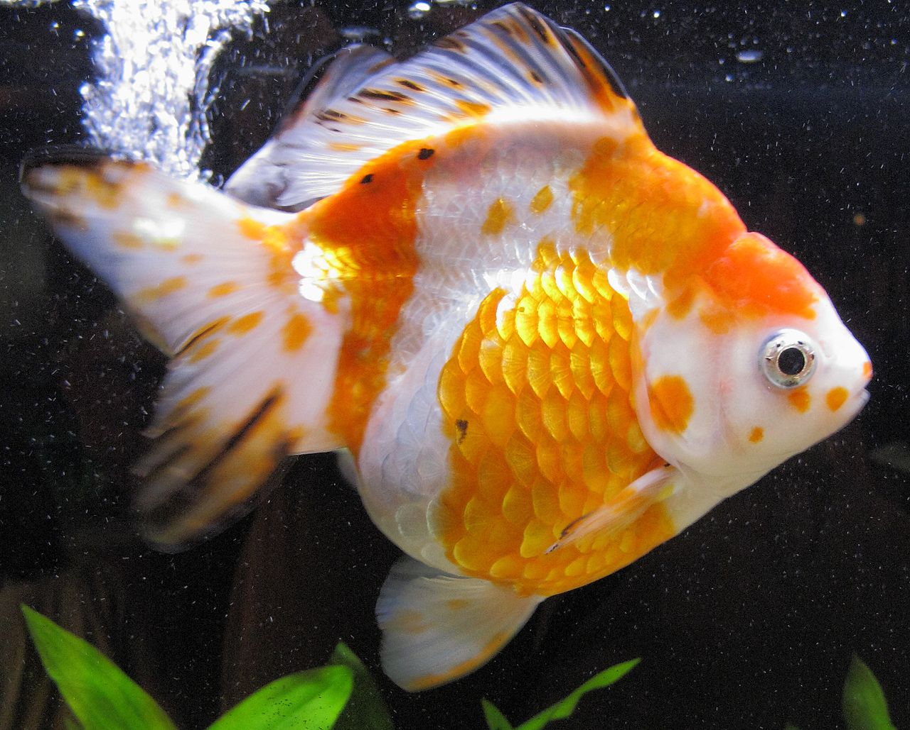

The ryukin is a hardy and attractive variety of goldfish with a pointed head and has a pronounced hump on the back behind the head. It may be long-finned or short-finned with either a triple or quadruple tail. The dorsal fin is high while the caudal fin is often twice as long as the body. The caudal fin may also have three or four lobes.
Ryukins come in deep-red, red-and-white, white, silver, blue, black, orange, lavender grey, iron and calico coloration.
The ryukin is a fine aquarium fish that can reach up to 8 inches (21 centimeters) in length. Some ryukins are reported to grow up to 10 inches in large aquariums and commercial ponds.
The Ryukin is Chinese in origin. It is unknown when the ryukin was bred but it is thought to come from the Wakin.[4][1] It has been so named because it was said to have arrived in Japan through the Ryukyu Islands, now Okinawa Prefecture, which lies between Taiwan and Japan. There were historical references that the existence of ryukins dates back to 1833, but it is said to have arrived in Japan in the 1770s. Early Japanese literature refers to the ryukin as the onaga (longtail) or the nagasaki goldfish. In English texts, they are also referred to as the Japanese ribbontail, the fringetail, the fantail or the veiltail.